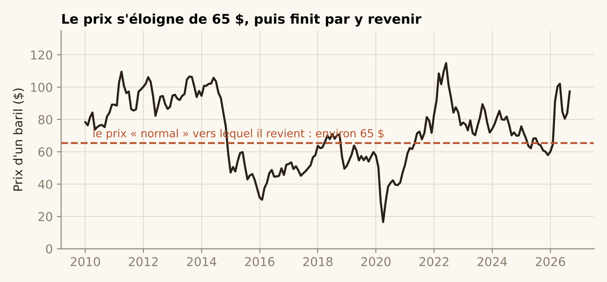
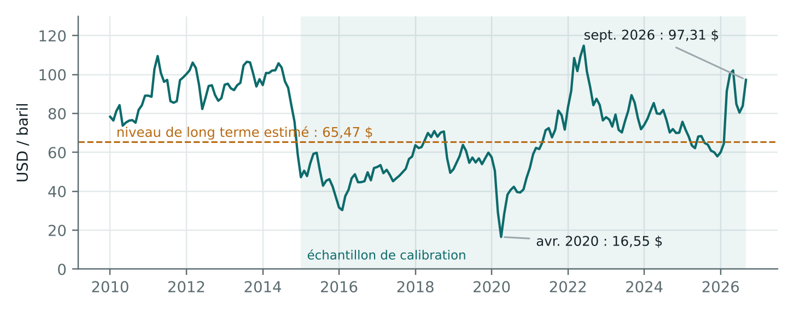
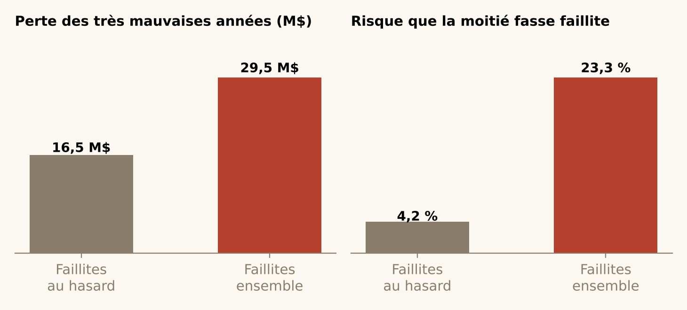
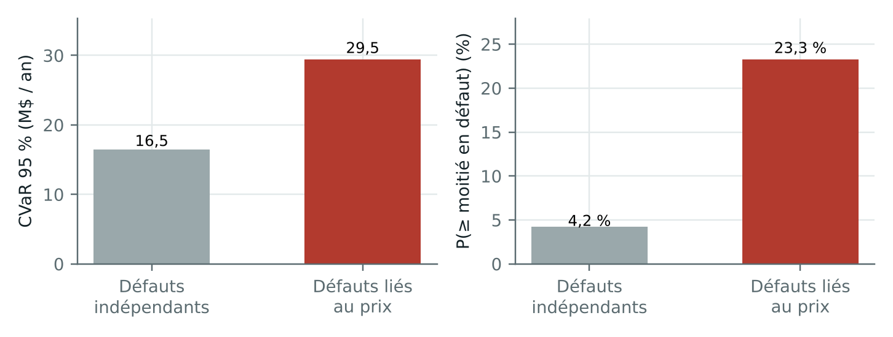

Quatre idées pour comprendre le risque du pétrole
Les négociants utilisent des modèles mathématiques pour décider. Derrière les équations, il y a quatre idées très simples. Les voici, avec un exemple de tous les jours.
1. Le pétrole est comme un élastique
Quand le prix du pétrole monte très haut, les producteurs forent plus de puits et les gens consomment moins. Résultat : le prix finit par redescendre. Quand il s'effondre, des puits ferment, il y a moins de pétrole, et le prix remonte.
Le prix est donc comme un élastique accroché autour de 65 $ le baril : on peut l'étirer loin, mais il a tendance à revenir. C'est très différent d'une action en Bourse, qui n'a pas de « prix normal » vers lequel revenir.

La limite : on ne sait pas bien à quelle vitesse l'élastique revient. Ça peut prendre cinq mois comme plusieurs années. Mieux vaut donc ne pas parier sur le retour du prix.
Pour aller plus loin : le modèle de Schwartz (retour à la moyenne)
Pourquoi le pétrole n'est pas une action
Quand le pétrole monte très haut, les producteurs forent davantage et les consommateurs en utilisent moins : le prix finit par redescendre. Quand il s'effondre, des puits ferment et l'offre se contracte : le prix remonte. Le pétrole a donc tendance à revenir vers un niveau de long terme, proche de son coût de production. Une action, elle, n'a pas de niveau « normal » vers lequel revenir.
Le modèle de Schwartz (1997) traduit cette idée : le logarithme du prix est tiré vers un niveau μ, avec une force κ, et secoué par un bruit de volatilité σ.

2. Les mauvaises nouvelles arrivent ensemble
Imagine que tu as prêté de l'argent à sept petits producteurs de pétrole. Tu te dis : « s'il y en a un qui fait faillite, les six autres paieront ». Sauf qu'ils vendent tous le même pétrole. Si le prix s'effondre, ils sont tous en difficulté en même temps.
C'est comme assurer toutes les maisons d'une même rue contre les inondations : le jour où la rivière déborde, tout le monde appelle l'assureur le même jour. Dans notre exemple, le risque que la moitié des producteurs fasse faillite la même année passe de 4 % à 23 %.

Pour aller plus loin : le modèle de Merton et le wrong-way risk
Le défaut qui arrive au pire moment
Imaginez que vous avez préfinancé sept producteurs texans. Si leurs faillites étaient indépendantes, il serait très improbable que la moitié fasse défaut la même année. Mais ils vendent tous le même pétrole : quand le prix chute, ils souffrent tous en même temps. Et c'est justement quand le prix est bas que le pétrole que vous détenez vaut le moins.
Le modèle structurel de Merton (1974) formalise cela : un producteur fait défaut quand la valeur de sa production future passe sous sa dette exigible. Cette valeur dépend directement du prix, donc les défauts sont corrélés par le prix.

Avec des défauts liés au prix, la perte moyenne dans les 5 % pires scénarios passe de 16,5 à 29,5 millions de dollars, et la probabilité que la moitié des producteurs fasse défaut la même année passe de 4 % à 23 %. Diversifier entre producteurs d'un même bassin protège beaucoup moins qu'on ne le croit.
3. Prévoir le pire, pas seulement le probable
Un négociant ne se demande pas seulement « combien vais-je gagner en moyenne ? », mais surtout « combien puis-je perdre les très mauvaises années ? ».
Pour aller plus loin : VaR, CVaR et optimisation
Mesurer le pire : VaR et CVaR
Simulez 100 années possibles pour votre portefeuille et classez-les de la pire à la meilleure. La VaR à 95 % est la perte de la 5e pire année : « dans 95 % des cas, on ne perd pas plus que ça ». Elle ne dit rien des 5 années encore pires. La CVaR à 95 % est la perte moyenne de ces 5 pires années : elle regarde à l'intérieur de la catastrophe.
Rockafellar et Uryasev (2000) ont montré qu'on peut plafonner la CVaR dans un programme linéaire. On peut donc chercher directement l'allocation qui maximise le profit espéré sous un plafond de perte extrême, ce que fait le moteur du Lab.
4. Tester un modèle sur ce qu'il n'a jamais vu
Un élève qui a appris les réponses par cœur aura 20/20 sur les exercices du cours, mais pas forcément à l'examen. Un modèle, c'est pareil : il doit être jugé sur des données qu'il n'a jamais vues.
Mon modèle des producteurs a appris sur la crise de 2015, puis je l'ai testé sur celle de 2020. Résultat : les producteurs qu'il jugeait les plus à risque se sont arrêtés six fois plus souvent que les autres.
Pour aller plus loin : le backtest hors échantillon et l'AUC
Croire un modèle : le backtest hors échantillon
Un modèle qui explique bien le passé sur lequel il a été construit ne prouve rien : il a pu apprendre le bruit. Le test honnête consiste à l'estimer sur une période, puis à le juger sur une autre qu'il n'a jamais vue.
Pour les producteurs texans, le modèle a été estimé sur la crise de 2015 (données fin 2014, sorties observées en 2016), puis appliqué sans retouche à la crise de 2020 : avec les seules informations disponibles fin 2019, qui a cessé de produire en 2021 ?

L'AUC résume la qualité du classement : c'est la probabilité qu'un opérateur sorti ait reçu un score de risque plus élevé qu'un opérateur resté. 0,5 correspond au hasard, 1 à un classement parfait. Ici, 0,71 hors échantillon, avec un intervalle de confiance de 0,65 à 0,78.
Références : Schwartz (1997), Journal of Finance ; Merton (1974), Journal of Finance ; Rockafellar et Uryasev (2000), Journal of Risk.